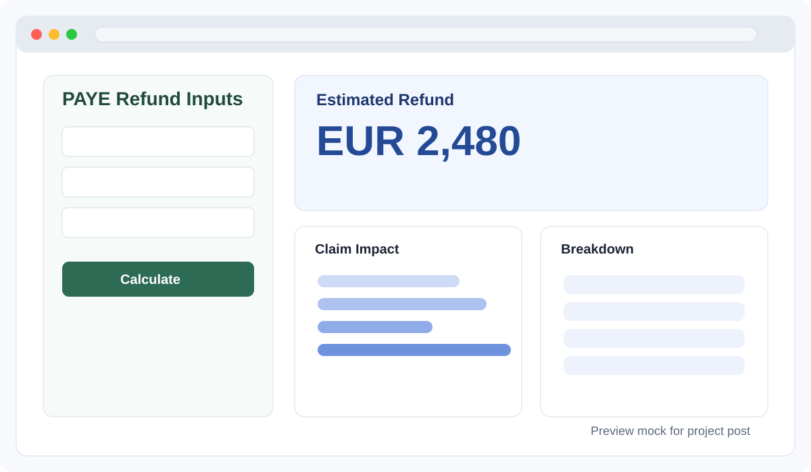

2026 Ireland PAYE Refund Calculator
This project is a refund-first tax estimator for people in Ireland who want a practical view of potential PAYE income tax refunds for 2026.

Open live sitePurpose
Most tax calculators focus on total liability only. I wanted a tool that starts from user intent: "How much refund might I receive?" The app compares PAYE tax already withheld against an estimated final income tax liability.
Data
- User-provided income and profile inputs (PAYE-focused)
- Claim and relief selections by category (Income/Family, Housing, Pension/Fund)
- Official 2026 rules from Revenue guidance and Budget references
Approach
The backend computes a baseline liability first, then applies selected credits and reliefs step-by-step to estimate refund impact by claim. This keeps the result transparent and easy to explain. The frontend presents both summary outcomes and claim-level contribution.
Findings
In testing, users understood refund drivers better when the result was shown as a decomposition instead of a single number. Grouping claims by life context (family, housing, pension/health) improved usability and reduced input confusion.
Next Step
The next iteration will add scenario save/compare, validation hints for edge cases, and optional guidance for documents needed when filing claims.
References
- Revenue: Tax rates, bands and relief charts
- Revenue: Employee Tax Credit
- Revenue: Rent Tax Credit (how much you can claim)
- Revenue: Pension contribution tax relief limits
- Revenue: Budget summary (official PDF)
Educational estimator only. Final eligibility should be validated with official Revenue guidance or a licensed adviser.